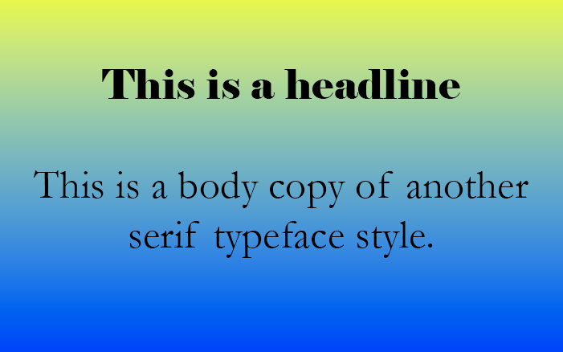
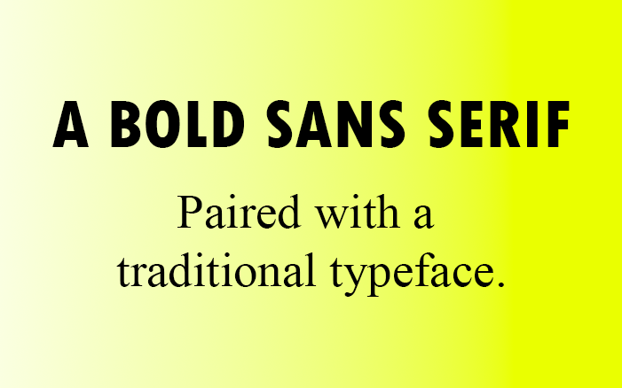
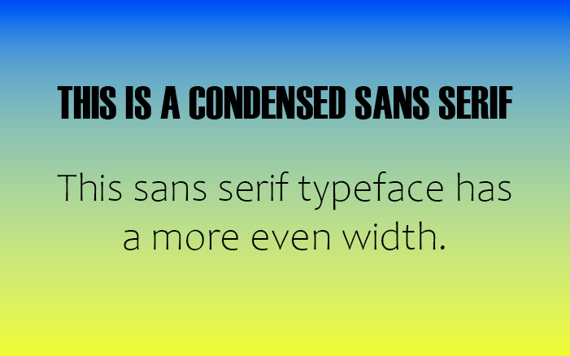
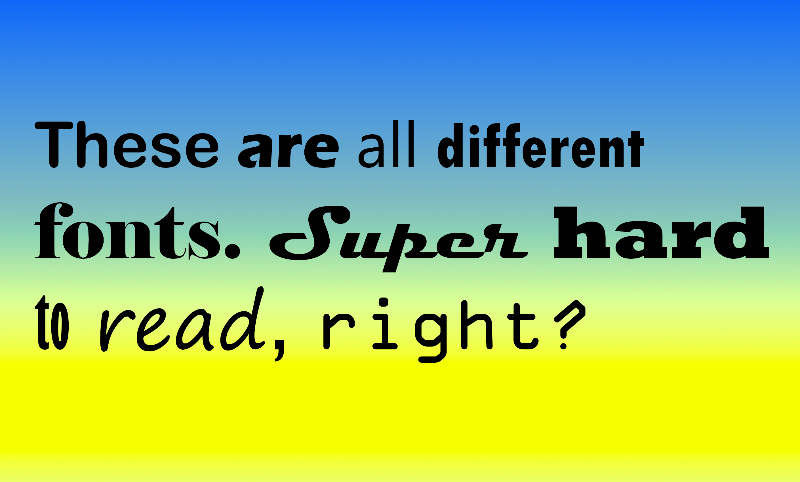
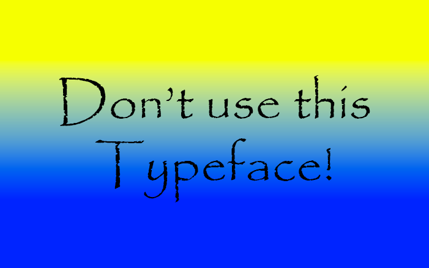

Tips for choosing fonts
We’ve discussed what typography is as well as some of the main categories of type, now let’s dive into tips for how to choose the best fonts.
Start with inspiration
An important part of the design process is research and inspiration. One of my favorite places to find design inspiration is on Pinterest. Let’s say I’m working on designing a poster to advertise an event. On Pinterest, I searched for “bold poster design” and this is what I found. There’s a lot of fun typefaces that might inspire the next one you use for your design.

Notice from this moodboard, how type really influences the mood of the design. For more tips on why typography is important in design, check out this article to learn more.
Choose with your main font first
No matter what you are designing, you should have a main font. When it comes to web design, most likely this will be used in your title or headline text. It’s meant to be an accent, to stand out, and influence the mood of your design. It doesn’t really matter what type of font it is, but knowing the first one will help you choose your second.
Create contrast with your second font
Now that you have a main font for your design, the best way to choose a good secondary font is to make sure it’s dramatically different yet complements the design. You wouldn’t want to choose two serifs that look similar, there is no contrast and in fact, it looks like a design mistake. Take a look at this example, these are two different serif typefaces but it’s difficult to tell.

Try pairing opposites
One of these ways to choose fonts is to choose a pair of opposites. A good example of this is to use a big and bold sans serif for your headline and a nice traditional serif typeface for the body copy. Take a look at this example, to see this tip in action.

Vary width
Another tip is to think about the width of the typeface and how they complement each other. For example, maybe you want to pair a condensed sans serif typeface with a wider sans serif. While they are both the same category of type, they vary in contrast due to their width.Take a look at this example for inspiration.

Consider shape: Geometric vs organic
Typefaces can have geometric or organic attributes in their shape. One of the most well-known geometric typefaces is Futura. One of the most well-known geometric typefaces is Futura, notice how open and round the O is in this poster design example.

Limit your design to 2–3 typefaces
Just like choosing a color palette, it can be easy to get carried away with all the options available to use for your design. A good general rule is to stick to about 2–3 different typefaces total for a design. Now of course this might vary depending on what you are designing but it’s a good rule of thumb.

For example, if you’re designing a logo you’ll most likely modify one main font and maybe use a secondary typeface. For a website or an app, you’ll likely want to follow the same rule. Especially when designing for digital screens, legibility and accessibility are key to creating a good user experience.
Take a look at this poster designed for the Tribeca Film Festival. It’s a successful design for many reasons such as using scale with type, a good use of space, and hierarchy. But notice how they limited the design to three typefaces. The “CUT” and “TO” are two distinctly different bold serif typefaces. The first is thick and condensed while the second is still bold but wide. These are further paired well with a third monotype (think, typewriter) font for the main body copy with the fine details of the event.

Avoid trendy or popular typefaces
You want to choose typefaces that stand the test of time. Be wary of trendy or popular typefaces that you see everyone else using. If you choose something too niche or close to the times when designing a logo, for example, you’ll find yourself having to redesign it after a few short years. To avoid your design becoming outdated, include classic and well-known typefaces.Check out this fun article on 25 classic fonts that will last a whole design career.

Papyrus is an example of a once trendy typeface (don’t do this).
Understand the goal for this design
If you’re designing a brand or a website for a client, are they in an industry where they need a lot of trust from their customer? For example, maybe it’s a banking app. Or are they trying to disrupt the space they are in? In the same example, maybe you’re creating a site for a cryptocurrency app. Yes they want to gain the trust of their potential customer but they also want to stand out, maybe be a little more modern and bold to gain the attention and respect of a potential customer. Understanding the intention behind the design will dictate your font choices.